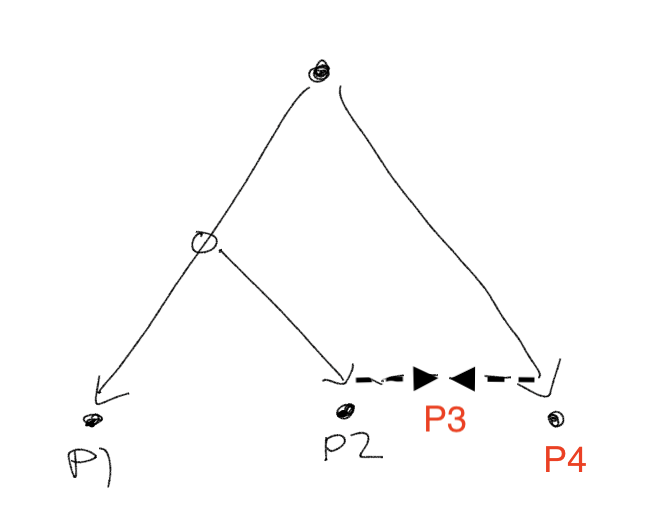

Admixture simulation 2: Branching + admixture
Jason Willwerscheid
1/10/2020
Last updated: 2020-01-10
Checks: 6 0
Knit directory: drift-workflow/analysis/
This reproducible R Markdown analysis was created with workflowr (version 1.2.0). The Report tab describes the reproducibility checks that were applied when the results were created. The Past versions tab lists the development history.
Great! Since the R Markdown file has been committed to the Git repository, you know the exact version of the code that produced these results.
Great job! The global environment was empty. Objects defined in the global environment can affect the analysis in your R Markdown file in unknown ways. For reproduciblity it’s best to always run the code in an empty environment.
The command set.seed(20190211) was run prior to running the code in the R Markdown file. Setting a seed ensures that any results that rely on randomness, e.g. subsampling or permutations, are reproducible.
Great job! Recording the operating system, R version, and package versions is critical for reproducibility.
Nice! There were no cached chunks for this analysis, so you can be confident that you successfully produced the results during this run.
Great! You are using Git for version control. Tracking code development and connecting the code version to the results is critical for reproducibility. The version displayed above was the version of the Git repository at the time these results were generated.
Note that you need to be careful to ensure that all relevant files for the analysis have been committed to Git prior to generating the results (you can use wflow_publish or wflow_git_commit). workflowr only checks the R Markdown file, but you know if there are other scripts or data files that it depends on. Below is the status of the Git repository when the results were generated:
Ignored files:
Ignored: .DS_Store
Ignored: .Rhistory
Ignored: .Rproj.user/
Ignored: docs/.DS_Store
Ignored: docs/assets/.DS_Store
Unstaged changes:
Modified: drift-workflow.Rproj
Note that any generated files, e.g. HTML, png, CSS, etc., are not included in this status report because it is ok for generated content to have uncommitted changes.
These are the previous versions of the R Markdown and HTML files. If you’ve configured a remote Git repository (see ?wflow_git_remote), click on the hyperlinks in the table below to view them.
| File | Version | Author | Date | Message |
|---|---|---|---|---|
| Rmd | 0df94cc | Jason Willwerscheid | 2020-01-10 | wflow_publish(“analysis/admix_sim2.Rmd”) |
suppressMessages({
library(flashier)
library(drift.alpha)
library(ggplot2)
library(reshape2)
library(tidyverse)
})In this admixture simulation, I introduce a branching event. Namely, I allow two populations to drift until time \(t\), at which point the first population diverges into Populations 1 and 2. The three populations then each experience independent drift until time \(2t\), at which point Population 2 receives an influx of genetic material from Population 3 (I set the proportion of the contribution from Population 3 at 0.25):

The covariance matrix appears as follows:
set.seed(666)
simple.admix <- admix_graph_sim(n_per_pop = 20, p = 1000,
b1pre = 1, b1post = 1,
b3pre = 2, b3post = 0,
b2from1 = 1, b2from3 = 0,
b2mixed = 0,
w = 0.75)
plot_cov(simple.admix$CovMat, as.is = TRUE)
Drift results
The correct number of leaves is three. When I initialize to a three-leaf tree, driftr is unable to escape from the initial tree solution.
drift.res <- init_using_hclust(simple.admix$Y, k = 3) %>%
drift(miniter = 2, maxiter = 30)#> 1 : 41004.034
#> 2 : 41076.837
#> 3 : 41121.324
#> 4 : 41147.238
#> 5 : 41161.213
#> 6 : 41168.307
#> 7 : 41171.752
#> 8 : 41173.380
#> 9 : 41174.145
#> 10 : 41174.511
#> 11 : 41174.696
#> 12 : 41174.796
#> 13 : 41174.857
#> 14 : 41174.898
#> 15 : 41174.927
#> 16 : 41174.950
#> 17 : 41174.968
#> 18 : 41174.982
#> 19 : 41174.994
#> 20 : 41175.004
labs <- rep(c("A", "B", "C"), each = 20)
plot_loadings(drift.res$EL, labs)
plot_cov(drift.res$EL * rep(sqrt(drift.res$prior_s2), each = 20))Ok, what if I initialize to the correct (ish) solution? Well then it stays there, but the ELBO is not as good as the previous (incorrect) solution.
init <- init_using_hclust(simple.admix$Y, k = 3)
init$EL[, 1] <- 0 # Remove mean factor
init$EL2[, 1] <- 0
init$EL[21:40, 3] <- 0.25 # Loadings corresponding to admixture event
init$EL2[21:40, 3] <- 0.25^2
drift.res <- drift(init, miniter = 2, maxiter = 30)#> 1 : 41061.015
#> 2 : 41094.161
#> 3 : 41105.744
#> 4 : 41110.472
#> 5 : 41112.464
#> 6 : 41113.375
#> 7 : 41113.852
#> 8 : 41114.135
#> 9 : 41114.319
#> 10 : 41114.443
#> 11 : 41114.529
#> 12 : 41114.591
#> 13 : 41114.634
#> 14 : 41114.666
#> 15 : 41114.689
#> 16 : 41114.706
#> 17 : 41114.718
#> 18 : 41114.728plot_loadings(drift.res$EL, labs)plot_cov(drift.res$EL * rep(sqrt(drift.res$prior_s2), each = 20))Questions
So we can get the correct solution, but only if we begin with it, and even then the ELBO does not encourage it. What is going on? Does the bimodal prior favor the binary solution too strongly? Is there insufficient evidence of the admixture event (i.e., is \(p\) too small)? Or, more worryingly, does driftr just spit out what we put into it? Why does the second solution not find the first, which at least judging by the ELBO is the better solution?
Increasing \(p\)
First I handle the easy question: If I increase \(p\) to a more realistic value of 10000, I do indeed get an improvement in the ELBO from the first solution to the second.
set.seed(666)
large.p <- admix_graph_sim(n_per_pop = 20, p = 10000,
b1pre = 1, b1post = 1,
b3pre = 2, b3post = 0,
b2from1 = 1, b2from3 = 0,
b2mixed = 0,
w = 0.75)
drift.res <- init_using_hclust(large.p$Y, k = 3) %>%
drift(miniter = 2, maxiter = 30)#> 1 : 408707.977
#> 2 : 409350.405
#> 3 : 409744.904
#> 4 : 409974.824
#> 5 : 410097.755
#> 6 : 410159.187
#> 7 : 410188.369
#> 8 : 410201.729
#> 9 : 410207.692
#> 10 : 410210.310
#> 11 : 410211.449
#> 12 : 410211.945
#> 13 : 410212.163
#> 14 : 410212.261
#> 15 : 410212.306
#> 16 : 410212.330
#> 17 : 410212.343
#> 18 : 410212.351plot_loadings(drift.res$EL, labs)
init <- init_using_hclust(large.p$Y, k = 3)
init$EL[, 1] <- 0 # Remove mean factor
init$EL2[, 1] <- 0
init$EL[21:40, 3] <- 0.25 # Loadings corresponding to admixture event
init$EL2[21:40, 3] <- 0.25^2
drift.res <- drift(init, miniter = 2, maxiter = 30)#> 1 : 409897.196
#> 2 : 410208.076
#> 3 : 410334.637
#> 4 : 410388.946
#> 5 : 410412.349
#> 6 : 410423.483
#> 7 : 410429.652
#> 8 : 410433.536
#> 9 : 410436.174
#> 10 : 410438.036
#> 11 : 410439.377
#> 12 : 410440.354
#> 13 : 410441.074
#> 14 : 410441.607
#> 15 : 410442.005
#> 16 : 410442.304
#> 17 : 410442.530
#> 18 : 410442.700
#> 19 : 410442.830
#> 20 : 410442.928
#> 21 : 410443.004
#> 22 : 410443.062
#> 23 : 410443.106
#> 24 : 410443.140
#> 25 : 410443.167
#> 26 : 410443.187
#> 27 : 410443.203
#> 28 : 410443.215
#> 29 : 410443.224plot_loadings(drift.res$EL, labs)Dependence on initialization
Now on to the more worrying issues. It’s plausible that the (incorrect) tree and the (correct) admixture graph are local minima. What if I initialize somewhere in between the two, intentionally setting the admixture loadings too small?
init <- init_using_hclust(simple.admix$Y, k = 3)
init$EL[, 1] <- 0 # Remove mean factor
init$EL2[, 1] <- 0
init$EL[21:40, 3] <- 0.05 # Loadings corresponding to admixture event
init$EL2[21:40, 3] <- 0.05^2
drift.res <- drift(init, miniter = 2, maxiter = 30)#> 1 : 41064.328
#> 2 : 41094.903
#> 3 : 41105.981
#> 4 : 41110.552
#> 5 : 41112.502
#> 6 : 41113.403
#> 7 : 41113.876
#> 8 : 41114.159
#> 9 : 41114.344
#> 10 : 41114.470
#> 11 : 41114.560
#> 12 : 41114.625
#> 13 : 41114.673
#> 14 : 41114.709
#> 15 : 41114.736
#> 16 : 41114.757
#> 17 : 41114.773
#> 18 : 41114.786
#> 19 : 41114.795plot_loadings(drift.res$EL, labs)plot_cov(drift.res$EL * rep(sqrt(drift.res$prior_s2), each = 20))It again stays where it started. Not ideal! I wonder whether this is true of any set of loadings in the three-dimensional subspace that distinguishes among the three populations. To test, I give driftr a more obviously bad initialization:
init <- init_using_hclust(simple.admix$Y, k = 3)
init$EL[41:60, 2] <- 0.5
init$EL2[41:60, 2] <- 0.5^2
init$EL[1:20, 3] <- 0.5
init$EL2[1:20, 3] <- 0.5^2
init$EL[21:40, 4] <- 0.5
init$EL2[21:40, 4] <- 0.5^2
init$EL[1:20, 5] <- 0.5
init$EL2[1:20, 5] <- 0.5^2
drift.res <- drift(init, miniter = 2, maxiter = 30)#> 1 : 40214.971
#> 2 : 40319.638
#> 3 : 40346.233
#> 4 : 40361.266
#> 5 : 40371.673
#> 6 : 40380.483
#> 7 : 40387.368
#> 8 : 40392.553
#> 9 : 40396.890
#> 10 : 40400.661
#> 11 : 40404.009
#> 12 : 40407.025
#> 13 : 40409.770
#> 14 : 40412.290
#> 15 : 40414.621
#> 16 : 40416.790
#> 17 : 40418.819
#> 18 : 40420.726
#> 19 : 40422.526
#> 20 : 40424.232
#> 21 : 40425.853
#> 22 : 40427.400
#> 23 : 40428.877
#> 24 : 40430.293
#> 25 : 40431.652
#> 26 : 40432.957
#> 27 : 40434.213
#> 28 : 40435.421
#> 29 : 40436.586
#> 30 : 40437.709plot_loadings(drift.res$EL, labs)
sessionInfo()#> R version 3.5.3 (2019-03-11)
#> Platform: x86_64-apple-darwin15.6.0 (64-bit)
#> Running under: macOS Mojave 10.14.6
#>
#> Matrix products: default
#> BLAS: /Library/Frameworks/R.framework/Versions/3.5/Resources/lib/libRblas.0.dylib
#> LAPACK: /Library/Frameworks/R.framework/Versions/3.5/Resources/lib/libRlapack.dylib
#>
#> locale:
#> [1] en_US.UTF-8/en_US.UTF-8/en_US.UTF-8/C/en_US.UTF-8/en_US.UTF-8
#>
#> attached base packages:
#> [1] stats graphics grDevices utils datasets methods base
#>
#> other attached packages:
#> [1] forcats_0.4.0 stringr_1.4.0 dplyr_0.8.0.1
#> [4] purrr_0.3.2 readr_1.3.1 tidyr_0.8.3
#> [7] tibble_2.1.1 tidyverse_1.2.1 reshape2_1.4.3
#> [10] ggplot2_3.2.0 drift.alpha_0.0.5 flashier_0.2.2
#>
#> loaded via a namespace (and not attached):
#> [1] Rcpp_1.0.1 lubridate_1.7.4 lattice_0.20-38
#> [4] assertthat_0.2.1 rprojroot_1.3-2 digest_0.6.18
#> [7] foreach_1.4.4 truncnorm_1.0-8 R6_2.4.0
#> [10] cellranger_1.1.0 plyr_1.8.4 backports_1.1.3
#> [13] evaluate_0.13 httr_1.4.0 pillar_1.3.1
#> [16] rlang_0.4.2 lazyeval_0.2.2 pscl_1.5.2
#> [19] readxl_1.3.1 rstudioapi_0.10 ebnm_0.1-24
#> [22] whisker_0.3-2 Matrix_1.2-15 rmarkdown_1.12
#> [25] labeling_0.3 munsell_0.5.0 mixsqp_0.3-10
#> [28] broom_0.5.1 compiler_3.5.3 modelr_0.1.5
#> [31] xfun_0.6 pkgconfig_2.0.2 SQUAREM_2017.10-1
#> [34] htmltools_0.3.6 tidyselect_0.2.5 workflowr_1.2.0
#> [37] codetools_0.2-16 crayon_1.3.4 withr_2.1.2
#> [40] MASS_7.3-51.1 grid_3.5.3 nlme_3.1-137
#> [43] jsonlite_1.6 gtable_0.3.0 git2r_0.25.2
#> [46] magrittr_1.5 scales_1.0.0 cli_1.1.0
#> [49] stringi_1.4.3 fs_1.2.7 doParallel_1.0.14
#> [52] xml2_1.2.0 generics_0.0.2 iterators_1.0.10
#> [55] tools_3.5.3 glue_1.3.1 hms_0.4.2
#> [58] parallel_3.5.3 yaml_2.2.0 colorspace_1.4-1
#> [61] ashr_2.2-38 rvest_0.3.4 knitr_1.22
#> [64] haven_2.1.1